Práctica Taller
Instalación local (self‑hosted) nunha distribución Kali GNU/Linux virtualizada
Automatización (apéndice)
Resumo do despregue automatizado (Vagrant + Docker) en Apéndice · SysReptor.
Escenario
A máquina anfitrión empregada é un sistema operativo baseado en Debian GNU/Linux con:
1. Oracle VirtualBox v7.1.6
2. vagrant 2.4.7-1
Para un correcto seguimento da práctica aconséllase empregar como mínimo as versións e sistema operativo comentados anteriormente.
Cheat Sheets Docker
Ligazóns de Interese:
1. Cheat Sheets Docker
2. Cheat Sheet Vagrant
A instalación oficial está documentada en Instalación de SysReptor (o soporte oficial é para Ubuntu; en Kali a instalación faise de forma manual). Para Kali GNU/Linux hai ademais unha guía comunitaria de emvee-nl que cobre a instalación, a importación de plantillas de OffSec e HTB e un titorial de uso da ferramenta. Partindo desa base imos:
1. Xerar un máquina virtual Kali GNU/Linux mediante un arquivo template Vagrantfile.
2. Unha vez rematado o proceso de Vagrant imos executar o script(comandos docker) para a instalación de SysReptor.
Procedemento
-
Na máquina anfitrión: crea os dous ficheiros do despregue —o
Vagrantfilee o scriptinstall_sysreptor.sh— no mesmo cartafol de traballo.Os ficheiros están no apéndice (fonte única)
Para non duplicar o contido (e evitar que as dúas versións diverxan), o
Vagrantfilee oinstall_sysreptor.shmanteñense completos no apéndice, que é a referencia de automatización desta práctica. Copia o contido de cada un ao seu ficheiro antes de continuar:Vagrantfile→ Apéndice · SysReptor — Paso 1install_sysreptor.sh→ Apéndice · SysReptor — Paso 2
Ambos ficheiros toman como base a guía de emvee-nl.
- Na máquina anfitrión. Executar:
IMPORTANTE!
Esperar a que rematen os comandos vagrant up e vagrant reload para facer login na máquina virtual.
Este proceso vai tardar xa que entre outras cousas actualízase o sistema operativo virtualizado Kali GNU/Linux.
$ cd /path/Vagrantfile/ #Acceder ao directorio onde está xerado o Vagrantfile anterior
$ vagrant up #Executar para poder xerar a máquina virtual en Oracle VirtualBox
$ vagrant reload #Reiniciar a máquina virtual aplicando os cambios do Vagrantfile sen destruíla nin perder a configuración ou datos
- Usuario:
kali - Contrasinal:
kali 4. Na máquina virtual. Executar nunha consola:
$ cd /vagrant #Acceder ao directorio /vagrant, que ven sendo o directorio da máquina anfitrión onde está xerado o Vagrantfile
$ sudo bash install_sysreptor.sh #Con permisos `sudo` sendo o usuario `kali` executar o script `install_sysreptor.sh` para a instalación de sysreptor a través de docker.
Neste proceso empregarase o script de instalación oficial de SysReptor, no cal debemos responder unhas preguntas:
Making install.sh executable...
Do you want to run the install.sh script? (y/n): y
Running install.sh...
Good to see you.
Get ready for the easiest pentest reporting tool.
Downloading Docker Compose files from https://github.com/syslifters/sysreptor/releases/latest/download/setup.tar.gz ...
Checking download...
Unpacking sysreptor.tar.gz...
License key (leave blank for Community Edition; you can upgrade anytime later):
Encrypt files and database? [y/n]: n
Creating app.env...
Generating Django secret key...
Generating database and Redis passwords...
Setting PostgreSQL version...
SysReptor runs on localhost (127.0.0.1) by default.
Should we setup a webserver (Caddy in Docker) for you to expose it to your local network or the Internet? [y/n]: n
Okay. Won't set up a webserver.
Creating docker volumes...
Volume: sysreptor-db-data
Volume: sysreptor-app-data
Launching SysReptor via docker compose...
Downloading the Docker images may take a few minutes.
[+] up 55/55
✔ Image postgres:18 Pulled 165.6s
✔ Image redis:8.0-alpine Pulled 162.9s
✔ Image syslifters/sysreptor:2026.82 Pulled 182.0s
✔ Network sysreptor_default Created 0.0s
✔ Container sysreptor-redis-1 Started 0.4s
✔ Container sysreptor-db Healthy 3.0s
✔ Container sysreptor-app Started 2.9s
Waiting for database setup...
Great! Everything seems to be up now.
Setting up initial data...
Creating initial user...
Superuser created successfully.
Importing demo projects...
Importing demo designs...
Importing finding templates...
All imported.
Very nice.
You can now login at http://127.0.0.1:8000
Username: reptor
Password: ***********************************
Copy your password now. Copied? [y/n]: y
Enable automatic updates? [y/n]: y
Automatic updates enabled. SysReptor will update daily at midnight.
Warning: For production environments, set ALLOWED_HOSTS in deploy/app.env to your domain name(s).
Leaving it unset may expose your installation to security vulnerabilities.
See: https://docs.sysreptor.com/setup/configuration/#allowed-hosts
This was easy, wasn't it?
$ firefox http://127.0.0.1:8000 & #Unha vez rematada a instalación abrir o navegador para acceder ao programa sysreptor e empregar as credenciais xeradas no paso anterior.
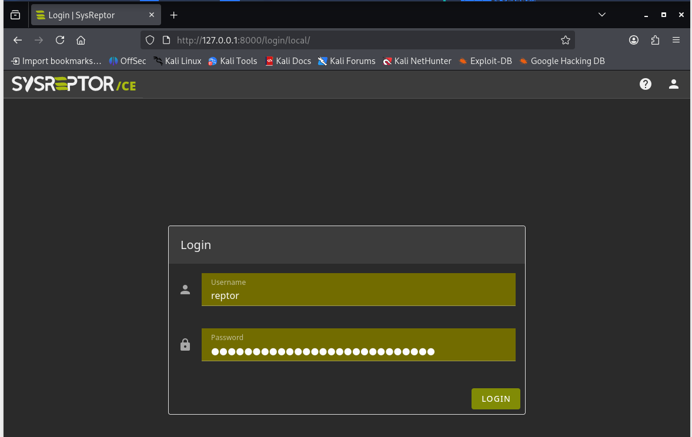
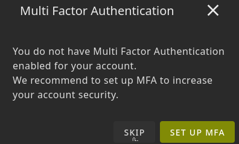
Instalación de plantillas
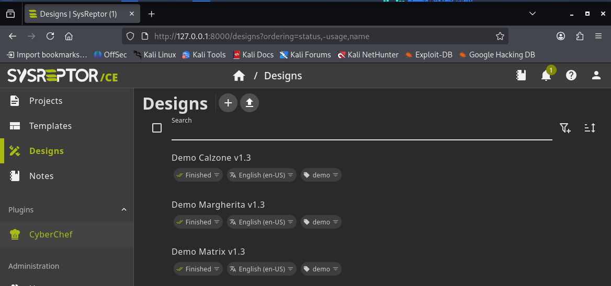
1) Facerse
root e acceder ao directorio onde SysReptor foi instalado 2) OffSec designs
# curl -s https://docs.sysreptor.com/assets/offsec-designs.tar.gz | docker compose exec --no-TTY app python3 manage.py importdemodata --type=design
3) HTB designs e proxectos demo
# curl -s https://docs.sysreptor.com/assets/htb-designs.tar.gz | docker compose exec --no-TTY app python3 manage.py importdemodata --type=design
# curl -s https://docs.sysreptor.com/assets/htb-demo-projects.tar.gz | docker compose exec --no-TTY app python3 manage.py importdemodata --type=project
4) Actualizar a interface web en http://127.0.0.1:8000
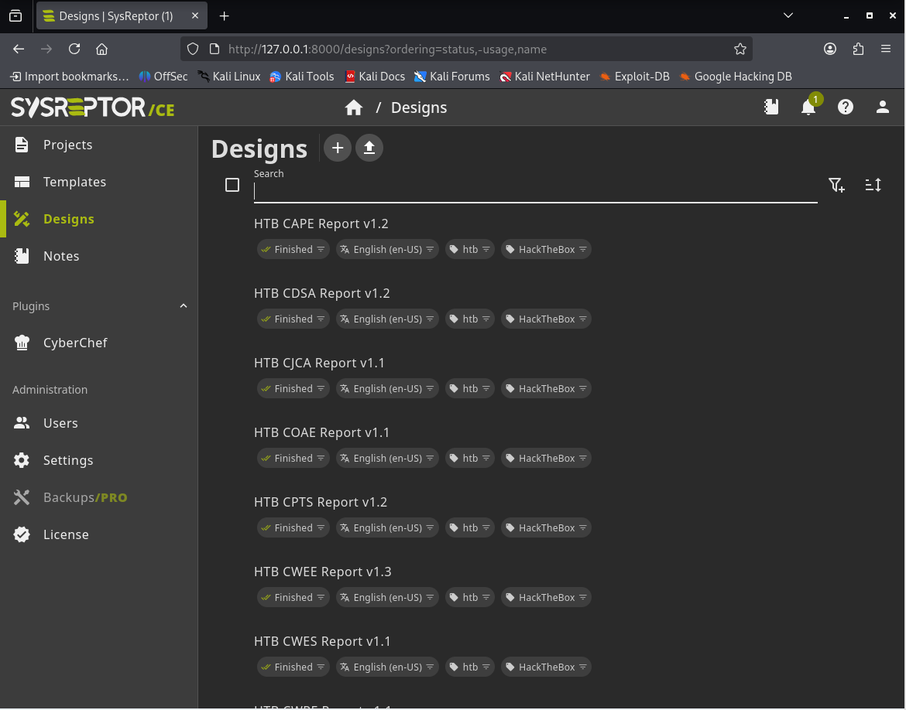
Alternativa: subir os
.tar.gzdesde a interface web (Projects/Designs → Upload).
Fluxo típico para OSCP con SysReptor
-
Crear proxecto co template OSCP
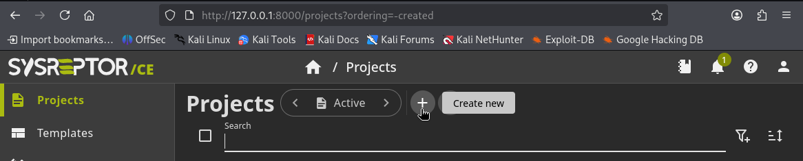
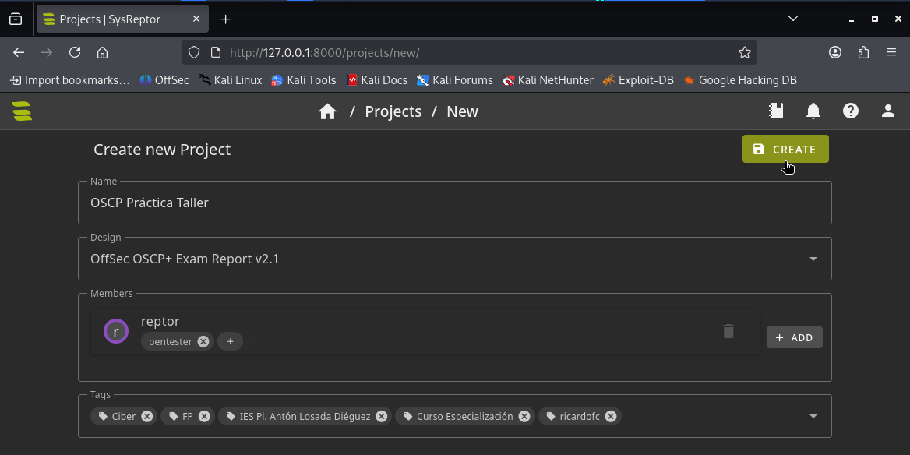
-
Encher seccións: hosts, vulnerabilidades, PoC, capturas
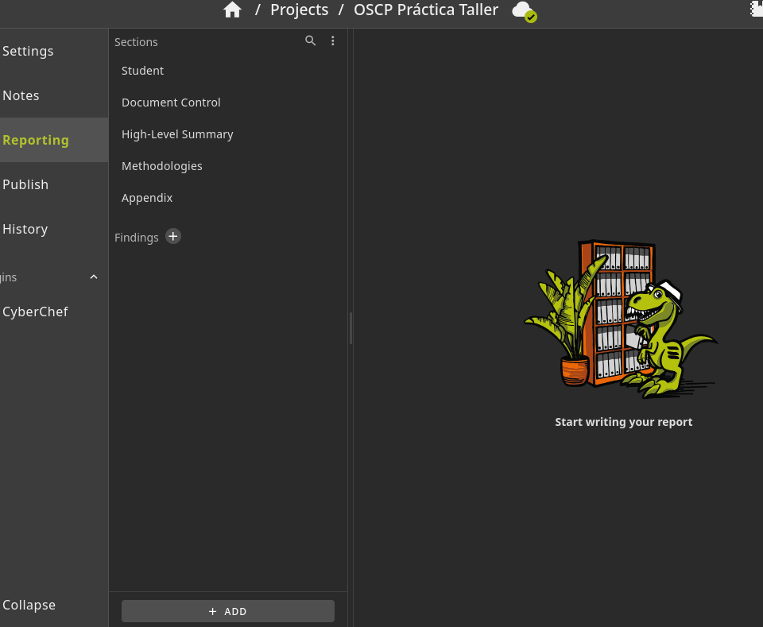
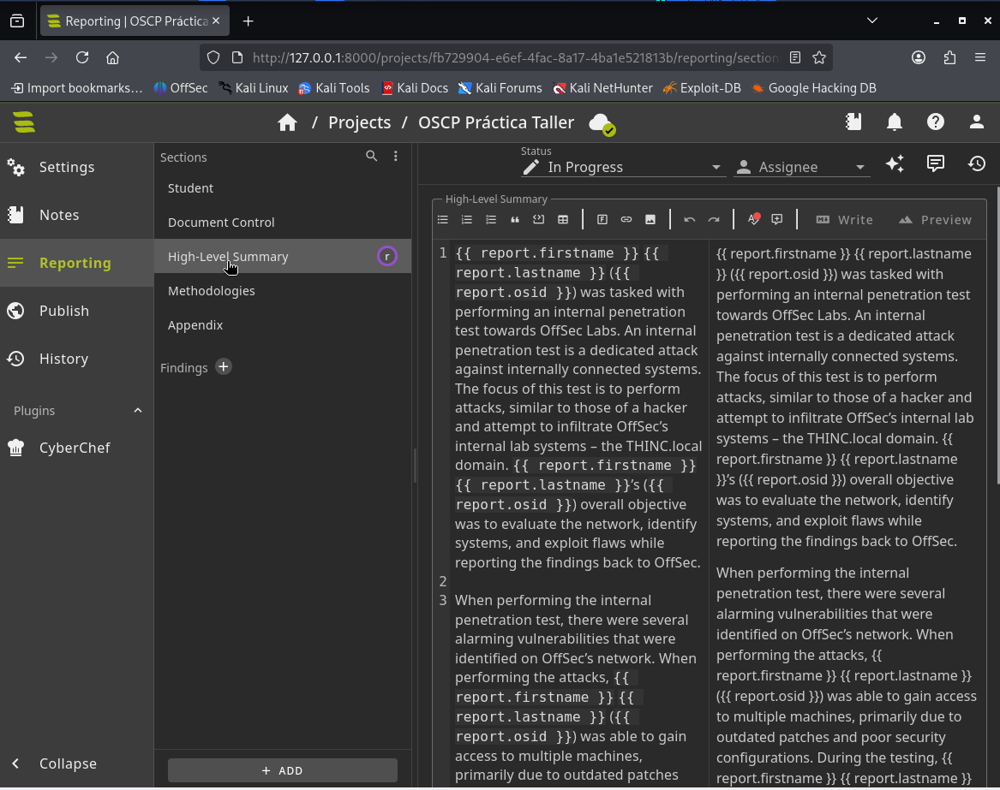
Markdown e Vue.js en SysReptor
En SysReptor hai que diferenciar dúas partes:
- O contido dos campos do informe pode redactarse en Markdown (listas, títulos, negrita, ligazóns, imaxes, código, etc.).
- O deseño do PDF defínese mediante HTML + Vue.js. As expresións
{{ report.firstname }},{{ report.lastname }},{{ report.osid }}ou{{ finding.title }}son expresións de Vue.js empregadas para inserir dinamicamente os datos do informe.
En resumo: Markdown emprégase para redactar o contido e HTML + Vue.js para construír o deseño do informe PDF.
-
Renderizar PDF premendo en Publish e descargar premendo en Download
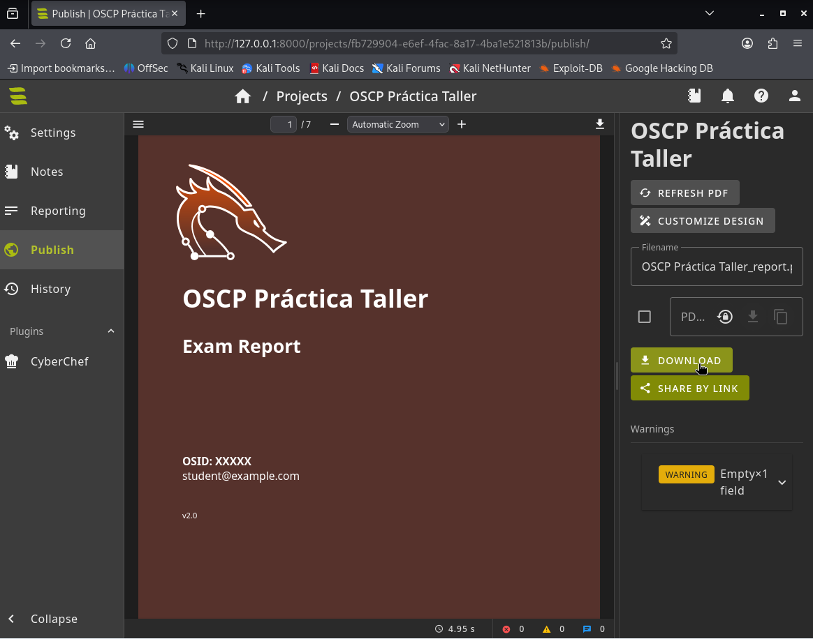
-
Comprimir o PDF en formato
.7zsen contrasinal, segundo as normas de OffSec -
Subir o paquete ao portal de OffSec nun prazo máximo de 24 horas
Crear e Modificar unha copia do Design Demo Matrix v1.3 en SysReptor CE
Este procedemento describe como crear e modificar unha copia do Design Demo Matrix v1.3 na versión Community Edition (CE) de SysReptor.
-
Acceder a Designs
Vai ao menú lateral → Settings → Designs.
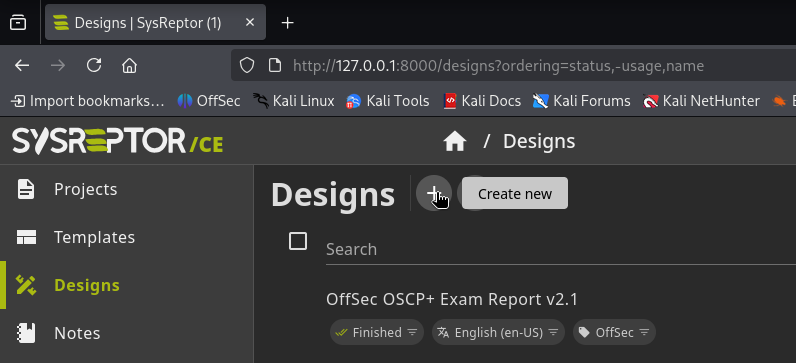
-
Crear un novo deseño a partir de
Demo Matrix v1.3
a. Preme o botón + (Create New).
b. No cadro New Design:- Elixir o deseño
Demo Matrix v1.3. - Picar en
COPY EXISTING DESIGN.
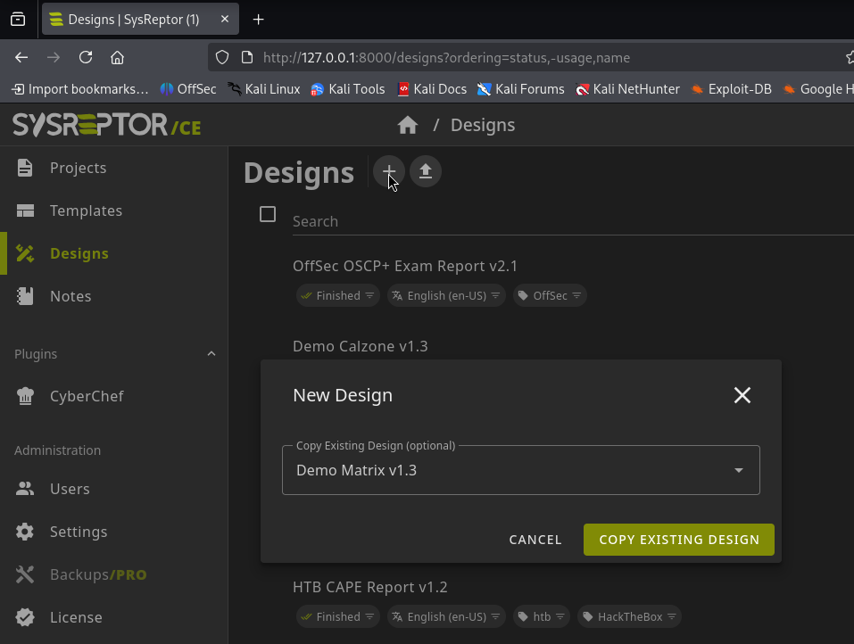
c. Modificar configuración do novo Deseño: - Ponlle un nome, por exemplo: (GL) Demo Matrix v1.3.
- Modifica os Tags se é preciso.
d. Garda para crear o novo deseño.
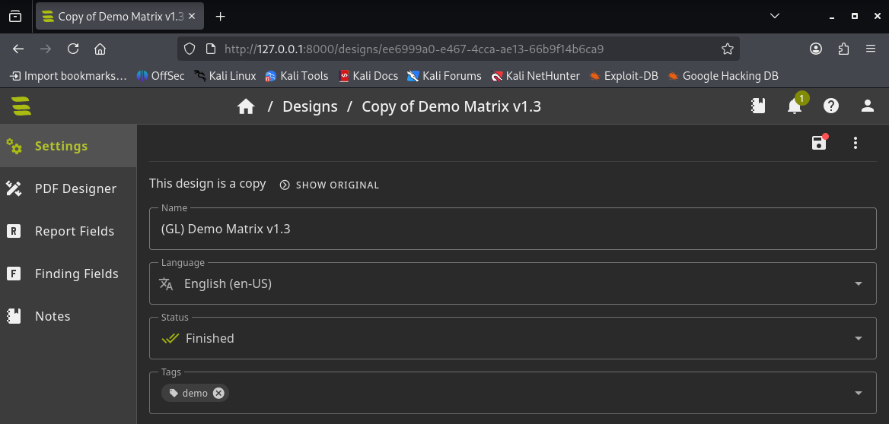
- Elixir o deseño
-
Editar o novo deseño
Editar
Podes acceder a través da lista de deseños, abrindo o recén xerado (GL) Demo Matrix v1.3.
Vue.js en SysReptor
Vue.js é o framework que SysReptor emprega na definición das plantillas dos informes. A súa sintaxe permite enlazar o HTML cos datos do informe de forma dinámica mediante:
- Variables:
{{ variable }} - Condicións:
v-if - Bucles:
v-for
Por exemplo:
<h1>{{ report.title }}</h1> <section v-if="report.is_retest"> Retest </section> <section v-for="finding in findings"> <h2>{{ finding.title }}</h2> </section>Vue non é propiamente unha linguaxe de plantillas independente, senón un framework JavaScript que amplía o HTML cunha sintaxe declarativa e reactiva.
Máis información:
a. Acceder a PDF Designer - HTML+VUE e modificar o código html e javascript. O HTML define a estrutura estática do documento (títulos, parágrafos, táboas, etc.) e a parte Vue permite empregar directivas e variables dinámicas (por exemplo, {{ finding.title }} ou bucles v-for) para que o PDF xerado se encha cos datos reais dun informe (findings, cliente, proxecto, etc.).

c. Acceder a PDF Designer - ASSETS para subir todas as imaxes que precises e substituir o logo e o fondo da portada se o desexas.
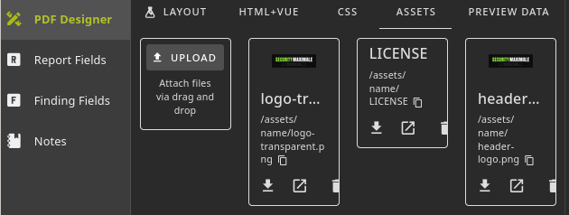
d. Garda os cambios.
- Variables:
-
Acceder a Report Fields:
- Engade / modifica / elimina todos os campos que precises. Estes serán chamados dende PDF Designer - HTML+VUE. Por exemplo: {{ report.title}}, {{ report.report_date }}, etc.
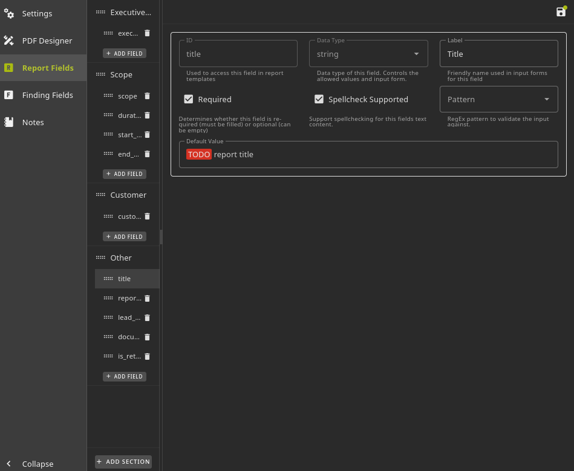
- Engade / modifica / elimina todos os campos que precises. Estes serán chamados dende PDF Designer - HTML+VUE. Por exemplo: {{ report.title}}, {{ report.report_date }}, etc.
-
Acceder a Finding Fields:
- Engade / modifica / elimina todos os campos que precises. Estes serán chamados dende a xeración dun Project ao escoller o Design.
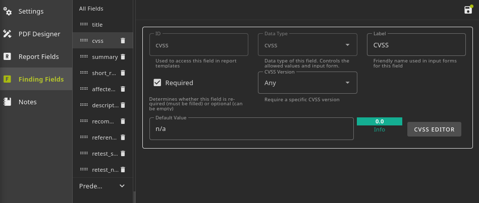
PREVIEW DATA
Preview Data permite definir mediante JSON os datos de exemplo empregados polo deseñador para renderizar a vista previa do informe. O HTML+Vue do deseño procésase normalmente, pero o resultado dos campos, variables, condicións (
v-if) e bucles (v-for) dependerá dos datos definidos nese JSON. Serve, polo tanto, como maqueta de proba antes de xerar un informe real. - Engade / modifica / elimina todos os campos que precises. Estes serán chamados dende a xeración dun Project ao escoller o Design.
-
Garda os cambios para que o deseño quede dispoñible cando crees informes.
Usar o novo Design
-
Crear/Modificar un proxecto(Project) e seleccionar (GL) Demo Matrix v1.3 como deseño.
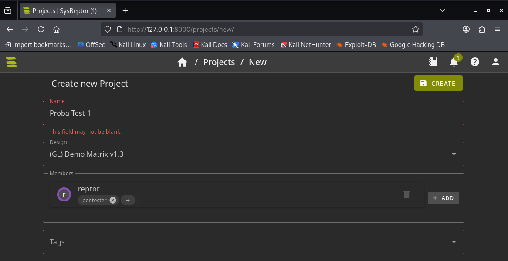
-
Na sección Reporting crear un novo Finding, o cal empregará os campos antes comentados na edición do deseño
Finding Fields.
Ao crear o Finding novo podes seleccionar un Template existente, por exemplo: Critical 9.8 SQL Injection (SQLi).
Picar no botón CREATE FROM TEMPLATE e modificalo.
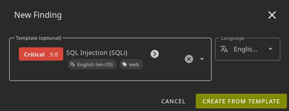
Novo Template
Se o que queres e facer permanente e reutilizable un
Findingo mellor é crear unTemplate, o cal logo poderás escoller para engadilo ao informe e incluso modificar sen afectar ao modelo orixinal.
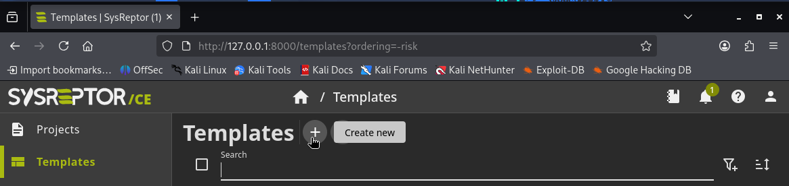
-
Na sección Publish é posible xerar e descargar o informe en formato PDF, coas opcións de actualizar o documento mediante Refresh PDF, modificar o deseño ligado con Customize Design, definir o nome do ficheiro e engadir un contrasinal opcional; finalmente, o informe pode descargarse directamente ou compartirse mediante ligazón.
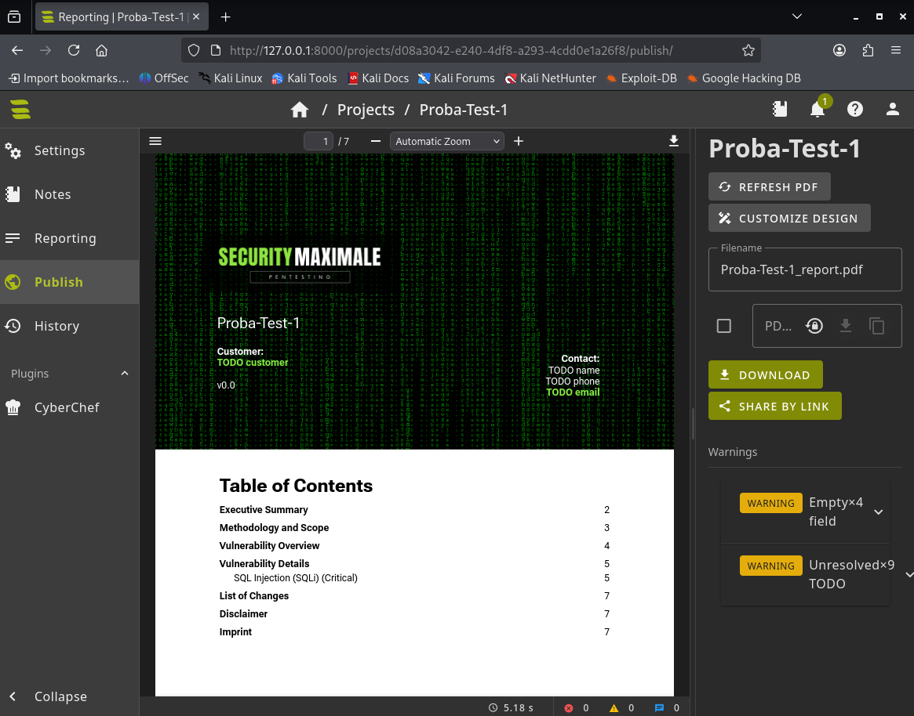
Warnings
Se aparecen
Warningspodemos acceder á sua resolución picando na ligazón correspondente aoWarning.
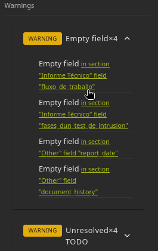
-
O informe xerado mostrará os textos traducidos e o estilo personalizado.
Exportar o novo Design
- Acceder a Designs
- Escoller o deseño a exportar.
- Na sección Settings do deseño, fai clic na icona de tres puntos (arriba á dereita) e selecciona a opción Export.
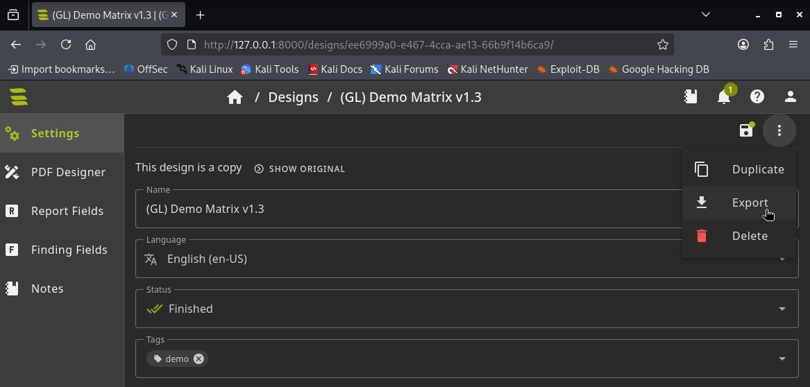
Descargar novo Design xerado
Importar un Design
Para importar un Design debemos:
1. Acceder a Designs
2. Picar na icona da frecha para Importar
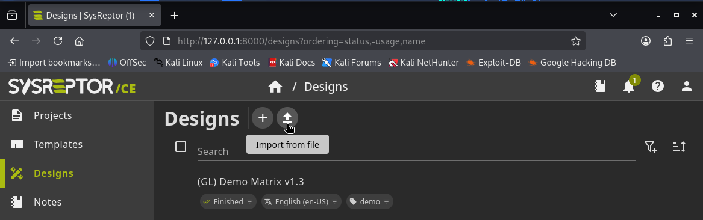
3. Escoller o ficheiro a importar e modificar a configuración:
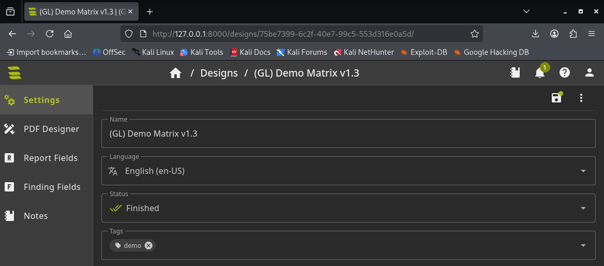
4. Gardar os cambios.
5. Deseño importado (Podemos verificalo na sección
Designs).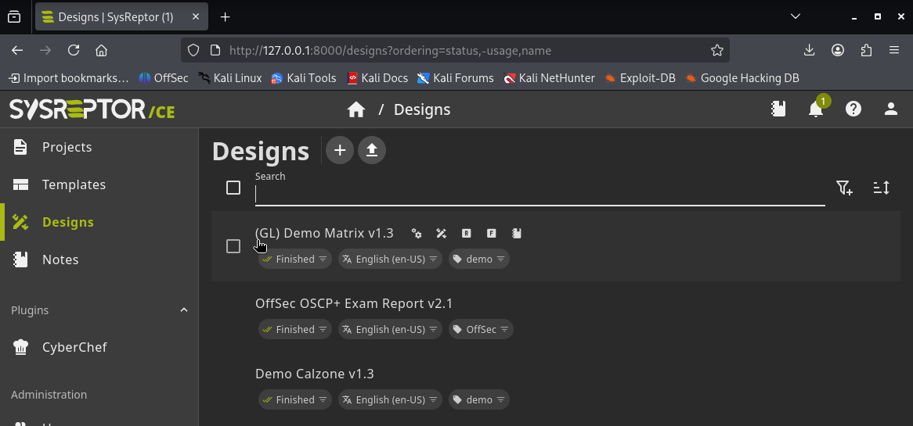